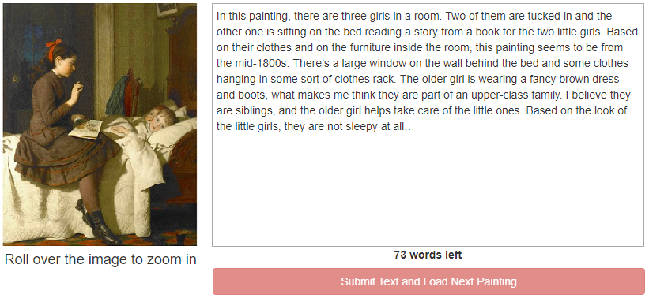

Welcome to our user study!
What you will be asked to do
- Mouse task
- Writing task
- Questionnaires
- Watch relaxing videos
In this task, you will click buttons to select the right answer. Each test contains a written color word painted with an ink that does not necessarily match the word. The image below shows two examples with different cues. After doing the task for 5 minutes, your performance will be evaluated.

In this task, you will be shown a painting/picture and will be asked to write about it. You can describe the elements of the picture, such as who is in it, how are their clothes, what they are doing, and are also encouraged to come up with a story about that picture. Keep in mind that you must use the full 5 minutes to perform this task. An example of a painting and a composition is shown below:
This task contains several multiple-choice questions.
In this task, feel free to adjust the audio to a comfortable volume.
The whole session should take no longer than 40 minutes. The sorting and writing tasks will be performed twice.
Who will know about my participation in this research study?
Information about you will be kept confidential to the extent permitted or required by law. People who have access to your information include the Principal Investigator and research study personnel. Representatives of regulatory agencies such as the Office of Human Research Protections (OHRP) and entities such as the Texas A&M University Human Research Protection Program may access your records to make sure the study is being run correctly and that information is collected properly.
Whom do I contact about my rights as a research participant?
For questions about your rights as a research participant, to provide input regarding research, or if you have questions, complaints, or concerns about the research, you may call the Texas A&M University Human Research Protection Program (HRPP) by phone at 1-979-458-4067, toll free at 1-855-795-8636, or by email at irb@tamu.edu. If you have question, concerns, or complaints about this study, you may contact the research staff Dennis Silva (silva.dennis@tamu.edu; phone: 979.250.2946) or Zelun Wang (zelun@tamu.edu; phone: 979.402.6766), or the Principal Investigator Ricardo Gutierrez-Osuna (rgutier@cse.tamu.edu; phone: 979.845.2942).